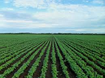
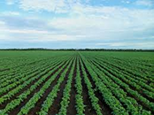
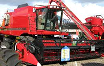

Atrações
Prepare-se para shows incríveis, danças folclóricas, pratos típicos e muito mais! Uma celebração que une diversão e cultura.
Celebrando a força e a tradição do campo
Prepare-se para shows incríveis, danças folclóricas, pratos típicos e muito mais! Uma celebração que une diversão e cultura.
Junte-se a nós para uma celebração inesquecível, onde a cultura, a gastronomia e a música do produtor rural ganham destaque. Uma festa elegante e acolhedora para toda a família.
